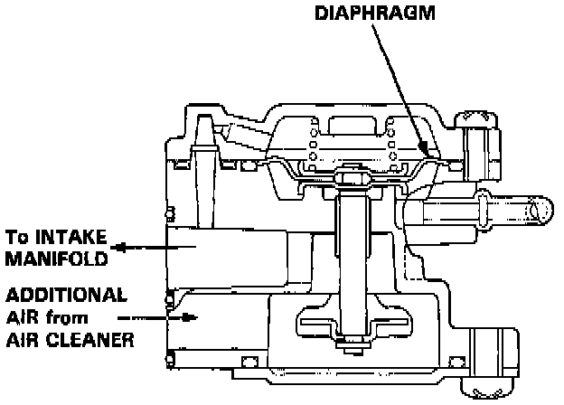

Starting Air Valve: Description and Operation

PURPOSE
When cranking the engine, the starting air valve supplies additional air to the intake manifold to improve engine starting hot or cold.
OPERATION
A spring loaded diaphragm opens a valve allowing extra air into the manifold when the engine is off or cranking. When the engine starts, manifold vacuum increases and the air valve closes.
CONSTRUCTION
A cast aluminum housing containing a diaphragm, spring and valve.